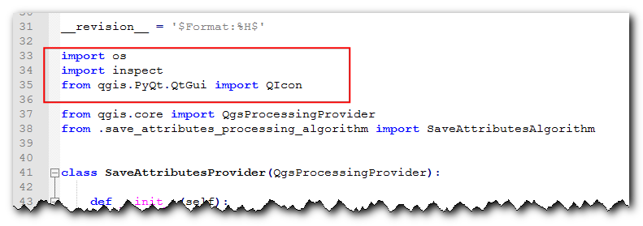

Ujaval Gandhi
Ujaval GandhiIzrada dodatka za obradu (QGIS3)¶
U prethodnom tutorijalu Kreiranje dodatka za Pajton (QGIS3), naučili ste kako da napravite Python dodatak - uključujući korisnički interfejs i prilagođenu logiku za obradu podataka. Iako su ove vrste dodataka korisne, teret dizajniranja korisničkog interfejsa stavljaju na autora dodatka. To rezultira time da svaki dodatak ima različite načine interakcije sa njim - što je zbunjujuće za korisnike. Takođe, obični dodaci ne interaguju sa drugim delovima QGIS-a. Na primer, ne možete koristiti funkcionalnost dodatka iz drugog algoritma. Ako je dodatak koji želite da napišete prvenstveno namenjen za analizu, a interakcija korisnika koju želite je ograničena na to da korisnik izabere ulaze i izlaze, postoji mnogo lakši i poželjniji način za pisanje dodataka koristeći Processing Framework. To uklanja potrebu da dizajnirate korisnički interfejs - pojednostavljujući proces. Ugrađena biblioteka za obradu kreira standardni interfejs za obradu u zavisnosti od vaših ulaza koji izgleda i ponaša se baš kao i svaki drugi algoritam za obradu u QGIS-u. Takođe se besprekorno integriše sa ostatkom Processing Framework-a - tako da se vaši algoritmi dodataka mogu koristiti u grupnoj obradi, grafičkom modeleru, pozivati iz Python konzole itd.
Pregled zadatka¶
Ponovo ćemo implementirati jednostavan dodatak iz tutorijala Kreiranje dodatka za Pajton (QGIS3) kao dodatak za obradu. To će rezultirati novim provajderom obrade pod nazivom Sačuvaj atribute i algoritmom Sačuvaj atribute kao CSV koji će omogućiti korisnicima da izaberu vektorski sloj i zapišu njegove atribute u CSV datoteku.
Nabavite alate¶
Uređivač teksta ili Pajton IDE¶
Bilo koja vrsta razvoja softvera zahteva dobar uređivač teksta. Ako već imate omiljeni uređivač teksta ili IDE (integrisano razvojno okruženje), možete ga koristiti za ovaj tutorijal. U suprotnom, svaka platforma nudi širok izbor besplatnih ili plaćenih opcija za uređivače teksta. Izaberite onaj koji odgovara vašim potrebama.
Ovaj tutorijal koristi Notepad++ editor na Windows-u.
Windows
Notepad++ je dobar besplatni editor za Windows. Preuzmite i instalirajte Notepad++ editor.
Белешка
Ako koristite Notepad++, obavezno idite na i omogućite Replace by space. Python je veoma osetljiv na razmake i ovo podešavanje će osigurati da se tabulatori i razmaci pravilno tretiraju.
Dodatak za kreiranje dodataka¶
Postoji koristan QGIS dodatak pod nazivom Plugin Builder koji kreira sve potrebne datoteke i šablonski kod za dodatak. Pronađite i instalirajte dodatak Plugin Builder. Pogledajte Korišćenje dodataka za više detalja o tome kako instalirati dodatke.
Dodaci Dodatak za ponovno učitavanje¶
Ovo je još jedan pomoćni dodatak koji omogućava iterativni razvoj dodataka. Koristeći ovaj dodatak, možete promeniti kod svog dodatka i on će se odraziti u QGIS-u bez potrebe da svaki put ponovo pokrećete QGIS. Pronađite i instalirajte dodatak Plugin Reloader. Pogledajte Korišćenje dodataka za više detalja o tome kako instalirati dodatke.
Белешка
Plugin Reloader je eksperimentalni dodatak. Uverite se da ste označili Prikaži i eksperimentalne dodatke u podešavanjima Plugin Manager ako ga ne možete pronaći.
Procedura¶
Otvorite QGIS. Idite na .

Videćete dijalog QGIS Plugin Builder sa formularom. Možete popuniti formular detaljima koji se odnose na naš dodatak. Naziv klase će biti naziv Pajton klase koja sadrži logiku dodatka. Ovo će takođe biti naziv fascikle koja sadrži sve datoteke dodatka. Unesite
SaveAttributeskao naziv klase. Naziv dodatka je naziv pod kojim će se vaš dodatak pojaviti u Plugin Manager. Unesite naziv kaoSave Attributes (Processing). Dodajte opis u polje Description. Naziv modula će biti naziv glavne Pajton datoteke za dodatak. Unesite ga kaosave_attributes_processing. Ostavite brojeve verzija kakvi jesu i unesite svoje ime i adresu e-pošte u odgovarajuća polja. Kliknite na Dalje.
Unesite kratak opis dodatka za dijalog O nama i kliknite na Dalje.

Izaberite „Processing Provider“ iz selektora Template. Vrednost Algorithm name će biti način na koji će korisnici pronaći algoritam za obradu u Processing Toolox-u. Unesite je kao
Save Attributes as CSV. Ostavite Algorithm group prazno. Unesite Provider name kaoSave Attributes. Unesite opis u polje Provider description. Kliknite na Next.

Konstruktor dodataka će vas pitati koje vrste datoteka treba generisati. Zadržite podrazumevani izbor i kliknite na Dalje.

Pošto ne nameravamo da objavimo dodatak, možete ostaviti vrednosti Praćenje grešaka, Repozitorijum i Početna stranica na podrazumevane vrednosti. Označite polje Označi dodatak kao eksperimentalni na dnu i kliknite na Sledeće.

Biće vam zatraženo da izaberete direktorijum za vaš dodatak. Za sada, sačuvajte ga u direktorijum koji možete lako pronaći na računaru i kliknite na Generiši.

Zatim, pritisnite dugme generate. Videćete dijalog za potvrdu kada vaš šablon dodatka bude kreiran.

Белешка
Možda ćete dobiti poruku koja kaže da pyrcc5 nije pronađen u putanji. Možete ignorisati ovu poruku.
Dodaci u QGIS-u se čuvaju u posebnoj fascikli. Moramo da kopiramo naš direktorijum dodataka u tu fasciklu pre nego što se može koristiti. U QGIS-u, pronađite trenutnu fasciklu profila tako što ćete otići na .

U folderu profila, kopirajte folder sa dodatkom u podfolder .
Sada smo spremni da prvi put pogledamo potpuno novi dodatak koji smo kreirali. Zatvorite QGIS i ponovo ga pokrenite. Idite na i omogućite dodatak
Sačuvaj atribute (Obrada)na kartici Instalirano.

Idite na . Primetićete da se na dnu nalazi novi provajder pod nazivom
Save Attributes. Proširite ga da biste pronašli algoritam pod nazivomSave Attributes as CSV. Dvaput kliknite da biste ga pokrenuli.

Primetićete poznati dijalog algoritma za obradu sa padajućim menijem za ulazni sloj i selektorom za izlazni sloj. Sada ćemo prilagoditi ovaj dijalog našim potrebama. Zatvorite ovaj dijalog.

Idite u direktorijum dodatka i učitajte datoteku
save_attributes_processing_algorithm.pyu uređivaču teksta. Za naš dodatak, uzimamo vektorski sloj kao ulaz i ispisujemo CSV datoteku kao izlaz. Dakle, umesto uvozaQgsProcessingParameterFeatureSinkkao izlaza - što je za vektorski sloj - dodajteQgsProcessingParameterFileDestinationšto je za datoteku.from qgis.core import (QgsProcessing, QgsFeatureSink, QgsProcessingAlgorithm, QgsProcessingParameterFeatureSource, QgsProcessingParameterFileDestination)
Zatim, pomerite se nadole i definišite izlazni parametar pod metodom
initAlgorithm()pomoću sledećeg koda.self.addParameter( QgsProcessingParameterFileDestination( self.OUTPUT, self.tr('Output File'), 'CSV files (*.csv)', ) )


Hajde da ponovo učitamo naš dodatak kako bismo mogli da vidimo promene u dijaloškom prozoru. Idite na . Izaberite
save_attributes_processingu dijaloškom prozoru Konfiguriši program za ponovno učitavanje dodataka.
Kliknite na dugme Ponovo učitaj dodatak da biste učitali najnoviju verziju dodatka. Da bismo testirali ovu novu funkcionalnost, moramo učitati neke slojeve u QGIS. Nakon što ste učitali neke slojeve, pokrenite algoritam . Videćete da je izlaz promenjen u datoteku umesto u sloj.

Dodajmo malo logike algoritmu koji uzima izabrani vektorski sloj i zapisuje atribute u CSV datoteku. Objašnjenje za ovaj kod može se naći u Početak programiranja u Pajtonu (QGIS3). Značajna razlika ovde je brojač koji pomaže u prikazivanju napretka obrade. Dodajte sledeći kod u metod
processAlgorithmi sačuvajte datoteku.def processAlgorithm(self, parameters, context, feedback): """ Here is where the processing itself takes place. """ source = self.parameterAsSource(parameters, self.INPUT, context) csv = self.parameterAsFileOutput(parameters, self.OUTPUT, context) fieldnames = [field.name() for field in source.fields()] # Compute the number of steps to display within the progress bar and # get features from source total = 100.0 / source.featureCount() if source.featureCount() else 0 features = source.getFeatures() with open(csv, 'w') as output_file: # write header line = ','.join(name for name in fieldnames) + '\n' output_file.write(line) for current, f in enumerate(features): # Stop the algorithm if cancel button has been clicked if feedback.isCanceled(): break # Add a feature in the sink line = ','.join(str(f[name]) for name in fieldnames) + '\n' output_file.write(line) # Update the progress bar feedback.setProgress(int(current * total)) return {self.OUTPUT: csv}

Nazad u glavnom prozoru QGIS-a, ponovo učitajte dodatak klikom na dugme Ponovo učitaj dodatak. Pokrenite algoritam . Izaberite sloj za Ulazni sloj. Zatim, kliknite na dugme … pored Izlazna datoteka.
Nazovite izlaznu datoteku „test.csv“ i kliknite na Pokreni. Algoritam će se pokrenuti i proizvesti CSV datoteku na izabranoj lokaciji.
Kao što je ranije pomenuto, iako ovaj algoritam dolazi iz dodatka, on se veoma dobro integriše sa ugrađenim alatima za obradu. Da bismo ovo demonstrirali, pokrenimo ovaj algoritam koristeći ugrađeni interfejs za paketnu obradu. Kliknite desnim tasterom miša na algoritam i izaberite Izvrši kao paketnu obradu...
Možete odabrati više unosa i pokrenuti ovaj algoritam u seriji da biste proizveli više CSV datoteka u jednom pokretanju. Ako niste upoznati sa interfejsom za serijske obrade, pogledajte Paketna obrada pomoću okvira za obradu (QGIS3) za uputstva korak po korak.

Dodatak je spreman i možete ga isporučiti u trenutnom obliku. Ali možemo poboljšati korisničko iskustvo tako što ćemo učiniti da se dodatak za obradu ponaša kao običan dodatak. Koristeći hibridni pristup opisan u nastavku, možete dodati stavku menija i dugme na traci sa alatkama. Na ovaj način, korisnicima dajete lakši način da otkriju i pokrenu alate koji su instalirani kao deo dodatka. Biće nam potrebna ikona za dodatak. Preuzmite logo.png i kopirajte ga u direktorijum dodataka.

Otvorite datoteku
save_attributes_processing.py. Dodajte sledeće importovane datoteke na vrh datoteke.from qgis.PyQt.QtWidgets import QAction from qgis.PyQt.QtGui import QIcon from qgis.core import QgsProcessingAlgorithm, QgsApplication import processing
Pomerite se nadole i izmenite metod
__init__()da biste inicijalizovali iface.def __init__(self, iface): self.provider = None self.iface = iface
Pomerite se dalje nadole i pronađite metodu „initGui“. Ona sadrži samo kod za inicijalizaciju provajdera obrade. Dodaćemo kod za dodavanje dugmeta na traci sa alatkama i stavke menija. Takođe ćemo morati da dodamo kod metodi „unload“ da bismo uklonili ove elemente kada se dodatak ukloni.
def initGui(self): self.initProcessing() icon = os.path.join(os.path.join(cmd_folder, 'logo.png')) self.action = QAction( QIcon(icon), u"Save Attributes as CSV", self.iface.mainWindow()) self.action.triggered.connect(self.run) self.iface.addPluginToMenu(u"&SaveAttributes", self.action) self.iface.addToolBarIcon(self.action) def unload(self): QgsApplication.processingRegistry().removeProvider(self.provider) self.iface.removePluginMenu(u"&SaveAttributes", self.action) self.iface.removeToolBarIcon(self.action)
Povezali smo dugme i stavku menija da bismo pokrenuli metodu „run“ kada se klikne na nju. Dodajte novu metodu na dnu koja koristi pomoćnu metodu „execAlgorithmDialog“ za pokretanje algoritma za obradu.
def run(self): processing.execAlgorithmDialog("Save Attributes:Save Attributes as CSV")


Zatim, potrebna nam je manja ispravka datoteke
__init__.pyu direktorijumu dodatka. Otvorite datoteku i dodajteifaceu naredbu za vraćanje, tako da se referenca na QGIS interfejs prosledi dodatku.
Nazad u glavnom prozoru QGIS-a, ponovo učitajte dodatak klikom na dugme Ponovo učitaj dodatak. Videćete novu ikonu na traci sa alatkama i stavku menija pod . Možete kliknuti na njih da biste pokrenuli algoritam
Sačuvaj atribute kao CSV. Primetićete da provajder obrade i algoritam na traci sa alatkama i dalje imaju podrazumevane ikone. Hajde da to popravimo.
Otvorite datoteku
save_attributes_processing_provider.pyiz direktorijuma dodatka. Dodajte uvoze na vrh na sledeći način.import os import inspect from qgis.PyQt.QtGui import QIcon
Izmenite metod „icon“ na sledeći način da biste dodali prilagođenu ikonu.
def icon(self): cmd_folder = os.path.split(inspect.getfile(inspect.currentframe()))[0] icon = QIcon(os.path.join(os.path.join(cmd_folder, 'logo.png'))) return icon

Zatim, otvorite datoteku
save_attributes_processing_algorithm.py. Dodajte uvoz na vrhu na sledeći način.import os import inspect from qgis.PyQt.QtGui import QIcon
Dodajte novu metodu „ikona“ pomoću sledećeg koda.
def icon(self): cmd_folder = os.path.split(inspect.getfile(inspect.currentframe()))[0] icon = QIcon(os.path.join(os.path.join(cmd_folder, 'logo.png'))) return icon


Ponovo učitajte dodatak i videćete da i provajder i algoritam imaju našu prilagođenu ikonu.

{kind=link}
Možete da arhivirate direktorijum dodataka i delite ga sa svojim korisnicima. Oni mogu da raspakuju sadržaj u svoj direktorijum dodataka i isprobaju vaš dodatak. Ako je ovo pravi dodatak, otpremili biste ga u QGIS repozitorijum dodataka kako bi svi QGIS korisnici mogli da pronađu i preuzmu vaš dodatak.
Белешка
Ovaj dodatak je samo u demonstracione svrhe. Nemojte objavljivati ovaj dodatak niti ga otpremati u repozitorijum dodataka QGIS-a.
Ispod je kompletan izvorni fajl kao referenca.
__init__.py
# -*- coding: utf-8 -*-
"""
/***************************************************************************
SaveAttributes
A QGIS plugin
This plugin adds an algorithm to save attributes of selected layer as a CSV file
Generated by Plugin Builder: http://g-sherman.github.io/Qgis-Plugin-Builder/
-------------------
begin : 2019-09-18
copyright : (C) 2019 by Ujaval Gandhi
email : ujaval@spatialthoughts.com
***************************************************************************/
/***************************************************************************
* *
* This program is free software; you can redistribute it and/or modify *
* it under the terms of the GNU General Public License as published by *
* the Free Software Foundation; either version 2 of the License, or *
* (at your option) any later version. *
* *
***************************************************************************/
This script initializes the plugin, making it known to QGIS.
"""
__author__ = 'Ujaval Gandhi'
__date__ = '2019-09-18'
__copyright__ = '(C) 2019 by Ujaval Gandhi'
# noinspection PyPep8Naming
def classFactory(iface): # pylint: disable=invalid-name
"""Load SaveAttributes class from file SaveAttributes.
:param iface: A QGIS interface instance.
:type iface: QgsInterface
"""
#
from .save_attributes_processing import SaveAttributesPlugin
return SaveAttributesPlugin(iface)
save_attributes_processing.py
# -*- coding: utf-8 -*-
"""
/***************************************************************************
SaveAttributes
A QGIS plugin
This plugin adds an algorithm to save attributes of selected layer as a CSV file
Generated by Plugin Builder: http://g-sherman.github.io/Qgis-Plugin-Builder/
-------------------
begin : 2019-09-18
copyright : (C) 2019 by Ujaval Gandhi
email : ujaval@spatialthoughts.com
***************************************************************************/
/***************************************************************************
* *
* This program is free software; you can redistribute it and/or modify *
* it under the terms of the GNU General Public License as published by *
* the Free Software Foundation; either version 2 of the License, or *
* (at your option) any later version. *
* *
***************************************************************************/
"""
__author__ = 'Ujaval Gandhi'
__date__ = '2019-09-18'
__copyright__ = '(C) 2019 by Ujaval Gandhi'
# This will get replaced with a git SHA1 when you do a git archive
__revision__ = '$Format:%H$'
import os
import sys
import inspect
from qgis.PyQt.QtWidgets import QAction
from qgis.PyQt.QtGui import QIcon
from qgis.core import QgsProcessingAlgorithm, QgsApplication
import processing
from .save_attributes_processing_provider import SaveAttributesProvider
cmd_folder = os.path.split(inspect.getfile(inspect.currentframe()))[0]
if cmd_folder not in sys.path:
sys.path.insert(0, cmd_folder)
class SaveAttributesPlugin(object):
def __init__(self, iface):
self.provider = None
self.iface = iface
def initProcessing(self):
"""Init Processing provider for QGIS >= 3.8."""
self.provider = SaveAttributesProvider()
QgsApplication.processingRegistry().addProvider(self.provider)
def initGui(self):
self.initProcessing()
icon = os.path.join(os.path.join(cmd_folder, 'logo.png'))
self.action = QAction(
QIcon(icon),
u"Save Attributes as CSV", self.iface.mainWindow())
self.action.triggered.connect(self.run)
self.iface.addPluginToMenu(u"&SaveAttributes", self.action)
self.iface.addToolBarIcon(self.action)
def unload(self):
QgsApplication.processingRegistry().removeProvider(self.provider)
self.iface.removePluginMenu(u"&SaveAttributes", self.action)
self.iface.removeToolBarIcon(self.action)
def run(self):
processing.execAlgorithmDialog("Save Attributes:Save Attributes as CSV")
save_attributes_processing_algorithm.py
# -*- coding: utf-8 -*-
"""
/***************************************************************************
SaveAttributes
A QGIS plugin
This plugin adds an algorithm to save attributes of selected layer as a CSV file
Generated by Plugin Builder: http://g-sherman.github.io/Qgis-Plugin-Builder/
-------------------
begin : 2019-09-18
copyright : (C) 2019 by Ujaval Gandhi
email : ujaval@spatialthoughts.com
***************************************************************************/
/***************************************************************************
* *
* This program is free software; you can redistribute it and/or modify *
* it under the terms of the GNU General Public License as published by *
* the Free Software Foundation; either version 2 of the License, or *
* (at your option) any later version. *
* *
***************************************************************************/
"""
__author__ = 'Ujaval Gandhi'
__date__ = '2019-09-18'
__copyright__ = '(C) 2019 by Ujaval Gandhi'
# This will get replaced with a git SHA1 when you do a git archive
__revision__ = '$Format:%H$'
import os
import inspect
from qgis.PyQt.QtGui import QIcon
from qgis.PyQt.QtCore import QCoreApplication
from qgis.core import (QgsProcessing,
QgsFeatureSink,
QgsProcessingAlgorithm,
QgsProcessingParameterFeatureSource,
QgsProcessingParameterFileDestination)
class SaveAttributesAlgorithm(QgsProcessingAlgorithm):
"""
This is an example algorithm that takes a vector layer and
creates a new identical one.
It is meant to be used as an example of how to create your own
algorithms and explain methods and variables used to do it. An
algorithm like this will be available in all elements, and there
is not need for additional work.
All Processing algorithms should extend the QgsProcessingAlgorithm
class.
"""
# Constants used to refer to parameters and outputs. They will be
# used when calling the algorithm from another algorithm, or when
# calling from the QGIS console.
OUTPUT = 'OUTPUT'
INPUT = 'INPUT'
def initAlgorithm(self, config):
"""
Here we define the inputs and output of the algorithm, along
with some other properties.
"""
# We add the input vector features source. It can have any kind of
# geometry.
self.addParameter(
QgsProcessingParameterFeatureSource(
self.INPUT,
self.tr('Input layer'),
[QgsProcessing.TypeVectorAnyGeometry]
)
)
# We add a file output of type CSV.
self.addParameter(
QgsProcessingParameterFileDestination(
self.OUTPUT,
self.tr('Output File'),
'CSV files (*.csv)',
)
)
def processAlgorithm(self, parameters, context, feedback):
"""
Here is where the processing itself takes place.
"""
source = self.parameterAsSource(parameters, self.INPUT, context)
csv = self.parameterAsFileOutput(parameters, self.OUTPUT, context)
fieldnames = [field.name() for field in source.fields()]
# Compute the number of steps to display within the progress bar and
# get features from source
total = 100.0 / source.featureCount() if source.featureCount() else 0
features = source.getFeatures()
with open(csv, 'w') as output_file:
# write header
line = ','.join(name for name in fieldnames) + '\n'
output_file.write(line)
for current, f in enumerate(features):
# Stop the algorithm if cancel button has been clicked
if feedback.isCanceled():
break
# Add a feature in the sink
line = ','.join(str(f[name]) for name in fieldnames) + '\n'
output_file.write(line)
# Update the progress bar
feedback.setProgress(int(current * total))
return {self.OUTPUT: csv}
def name(self):
"""
Returns the algorithm name, used for identifying the algorithm. This
string should be fixed for the algorithm, and must not be localised.
The name should be unique within each provider. Names should contain
lowercase alphanumeric characters only and no spaces or other
formatting characters.
"""
return 'Save Attributes as CSV'
def displayName(self):
"""
Returns the translated algorithm name, which should be used for any
user-visible display of the algorithm name.
"""
return self.tr(self.name())
def group(self):
"""
Returns the name of the group this algorithm belongs to. This string
should be localised.
"""
return self.tr(self.groupId())
def groupId(self):
"""
Returns the unique ID of the group this algorithm belongs to. This
string should be fixed for the algorithm, and must not be localised.
The group id should be unique within each provider. Group id should
contain lowercase alphanumeric characters only and no spaces or other
formatting characters.
"""
return ''
def tr(self, string):
return QCoreApplication.translate('Processing', string)
def icon(self):
"""
Should return a QIcon which is used for your provider inside
the Processing toolbox.
"""
cmd_folder = os.path.split(inspect.getfile(inspect.currentframe()))[0]
icon = QIcon(os.path.join(os.path.join(cmd_folder, 'logo.png')))
return icon
def createInstance(self):
return SaveAttributesAlgorithm()
save_attributes_processing_provider.py
# -*- coding: utf-8 -*-
"""
/***************************************************************************
SaveAttributes
A QGIS plugin
This plugin adds an algorithm to save attributes of selected layer as a CSV file
Generated by Plugin Builder: http://g-sherman.github.io/Qgis-Plugin-Builder/
-------------------
begin : 2019-09-18
copyright : (C) 2019 by Ujaval Gandhi
email : ujaval@spatialthoughts.com
***************************************************************************/
/***************************************************************************
* *
* This program is free software; you can redistribute it and/or modify *
* it under the terms of the GNU General Public License as published by *
* the Free Software Foundation; either version 2 of the License, or *
* (at your option) any later version. *
* *
***************************************************************************/
"""
__author__ = 'Ujaval Gandhi'
__date__ = '2019-09-18'
__copyright__ = '(C) 2019 by Ujaval Gandhi'
# This will get replaced with a git SHA1 when you do a git archive
__revision__ = '$Format:%H$'
import os
import inspect
from qgis.PyQt.QtGui import QIcon
from qgis.core import QgsProcessingProvider
from .save_attributes_processing_algorithm import SaveAttributesAlgorithm
class SaveAttributesProvider(QgsProcessingProvider):
def __init__(self):
"""
Default constructor.
"""
QgsProcessingProvider.__init__(self)
def unload(self):
"""
Unloads the provider. Any tear-down steps required by the provider
should be implemented here.
"""
pass
def loadAlgorithms(self):
"""
Loads all algorithms belonging to this provider.
"""
self.addAlgorithm(SaveAttributesAlgorithm())
# add additional algorithms here
# self.addAlgorithm(MyOtherAlgorithm())
def id(self):
"""
Returns the unique provider id, used for identifying the provider. This
string should be a unique, short, character only string, eg "qgis" or
"gdal". This string should not be localised.
"""
return 'Save Attributes'
def name(self):
"""
Returns the provider name, which is used to describe the provider
within the GUI.
This string should be short (e.g. "Lastools") and localised.
"""
return self.tr('Save Attributes')
def icon(self):
"""
Should return a QIcon which is used for your provider inside
the Processing toolbox.
"""
cmd_folder = os.path.split(inspect.getfile(inspect.currentframe()))[0]
icon = QIcon(os.path.join(os.path.join(cmd_folder, 'logo.png')))
return icon
def longName(self):
"""
Returns the a longer version of the provider name, which can include
extra details such as version numbers. E.g. "Lastools LIDAR tools
(version 2.2.1)". This string should be localised. The default
implementation returns the same string as name().
"""
return self.name()
If you want to give feedback or share your experience with this tutorial, please comment below. (requires GitHub account)